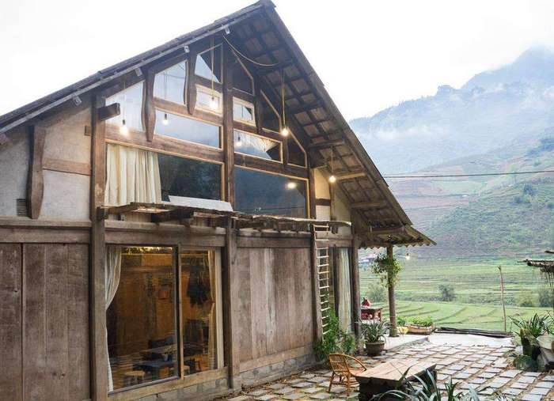

- TRANG CHỦ
- THỜI ĐIỂM NÊN ĐI
- PHƯƠNG TIỆN ĐI LẠI
- CHI PHÍ
>
CHI PHÍ DU LỊCH TÂY BẮC
Khi đi du lịch Tây Bắc, bạn sẽ có rất nhiều sự lựa chọn về nơi cư trú, vì dịch vụ du lịch
ở đây hiện nay rất phát triển. Bạn có thể thuê khách sạn ở trung tâm thành phố và thuê xe máy
để đi phượt thăm quan núi rừng Tây Bắc.
- Khách sạn 2 sao: 350.000 - 450.000 vnđ/đêm
- Khách sạn 3 sao: khoảng 850.000 vnđ/đêm
- Khách sạn 4 sao trở lên: Trên 1.000.000vnđ/đêm

Ngoài ra, bạn có thể lựa chọn nghỉ ngơi tại các homestay để được hòa mình vào thiên nhiên nơi
đây với view cửa sổ như ôm trọn cả Tây Bắc. Mức giá homestay cũng sẽ rẻ hơn khá nhiều so với
khách sạn.Các homestay sẽ có giá giao động từ 150.000 - 800.000 vnđ/người hoặc bạn cũng có thể
phòng rộng cho nhiều người. Với lối trang trí nhẹ nhàng, ở homestay đang là sự lựa chọn của rất
nhiều du khách khi ghé đến Tây Bắc.
